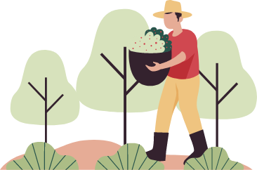
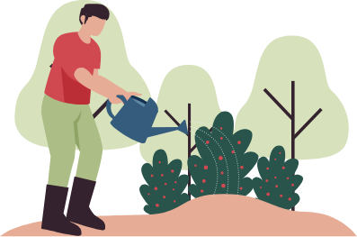
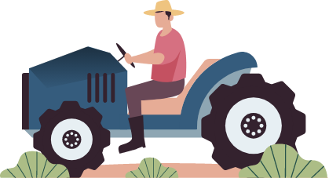

รู้จักเกษตรอินทรีย์ 459 ใน 3 นาที
ทุกวันนี้เราเชื่อความปลอดภัยของอาหารที่เรากินได้แค่ไหน โดยเฉพาะผักผลไม้ที่อาจได้ของแถมเป็นสารเคมีหรือยาปราบศัตรูพืชแทนวิตามิน

จากการลงพื้นที่มาอย่างยาวนาน ธ.ก.ส. มองเห็นปัญหาสุขภาพของเกษตรกรที่ได้รับพิษสะสมจากสารเคมีที่ใช้ในการเกษตร และปัญหาภาระหนี้สิน จึงเกิดเป็นโครงการเกษตรอินทรีย์ 459 ด้วยมุ่งหวังให้พี่น้องเกษตรกรมีเสถียรภาพด้านอาหารประจำวัน ลดภาระรายจ่าย ลดภาระหนี้ได้ แม้ไม่มีเงินแต่ต้องมีกิน เพียงเดินจากตัวบ้านสี่ห้าก้าวก็สามารถหาวัตถุดิบ พืชผัก เนื้อสัตว์ มาปรุงอาหารได้แล้ว เป็นการใช้พื้นที่เล็กๆ รอบบ้านให้เป็นประโยชน์ และใช้เวลาในการผลิตสั้นๆ เพียงไม่เกิน 45 วัน ก็ได้มีของกินโดยที่ไม่ต้องเสียเงินซื้อหาจากตลาด

แนวทางของเกษตรอินทรีย์ 459 นั้นไม่ยุ่งยาก มีกระบวนการที่ชัดเจน เกษตรกรหลายคนอาจยังกลัวในเรื่องความยุ่งยาก กลัวว่าจะทำไม่เป็นหรือไม่ได้ผล แต่หากได้ลองศึกษาวิธีการที่ได้จัดเป็นชุดความรู้มาแนะนำนี้ รวมถึงตัวอย่างของชุมชนและบุคคลที่ได้ลงมือทำแล้วประสบความสำเร็จเป็นแรงบันดาลใจให้เราได้เริ่มทำตามกับวิธีการง่ายๆ ที่ประกอบไปด้วย การทำน้ำหมักชีวภาพ แปลงผักปลอดสารพิษ การเลี้ยงปลาดุกในบ่อพลาสติก การเลี้ยงไก่ไข่ไก่พื้นเมือง และโรงเพาะเห็ด เริ่มแรกเราอาจไม่ต้องทำครบทุกอย่าง แต่เพียงขอให้เริ่มทำเท่านั้น เริ่มจากทำน้ำหมักชีวภาพให้เป็น เพราะนี่คือหัวใจของเกษตรอินทรีย์ และการมีแปลงผักหรือแม้แต่พืชผักสวนครัวรอบบ้าน ผลสำเร็จก็รอให้เห็นผลแล้วใน 45 วัน โดยที่ไม่เพียงแค่ลดการใช้จ่ายได้ แต่ยังจะทำให้มีเงินออมงอกเงย ที่สำคัญสุขภาพก็ดีขึ้นทั้งร่างกายและจิตใจ ความสุขของครอบครัวก็จะกลับคืนมา

เนื้อหาในชุดความรู้นี้ ธ.ก.ส. มุ่งหวังให้เกษตรกรเข้าใจวิธีการทำเกษตรอินทรีย์ 459 และสามารถลงมือทำได้เลยอย่างง่ายๆ และยังมีเรื่องเล่าของคนบันดาลใจ ที่จะสร้างพลังให้กับชาวเกษตรอินทรีย์ 459 ได้เป็นอย่างดี เพราะถ้าคนอื่นทำได้ เราก็ทำได้เช่นกัน
พลังเรื่องเล่า เรื่องราวของคนบันดาลใจ
จากองค์ความรู้สู่การลงมือทำ
มาทำเกษตรอินทรีย์ 459 กันเถอะ
กระบวนการของเกษตรอินทรีย์ 459 คือ การแบ่งพื้นที่รอบ ๆ บ้าน เบี้องต้นให้แบ่งทำ 5 อย่างคือ ทำน้ำหมัก ปลูกผัก บ่อปลาดุก เลี้ยงไก่ เพาะเห็ด ซึ่งทั้ง 5 อย่างนี้เพียงพอที่จะทำให้เรามีกินมีใช้ไปตลอด